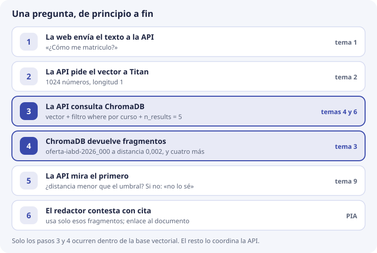
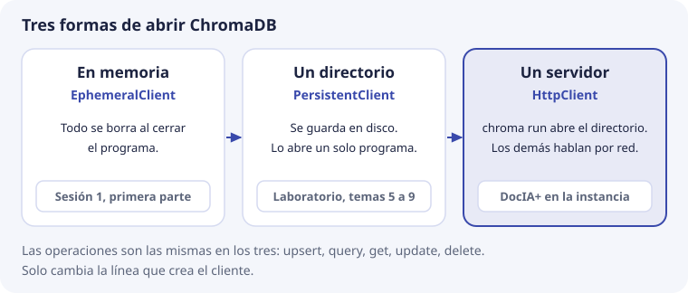
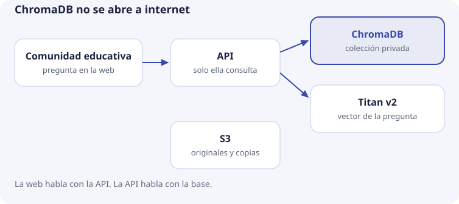

10. ChromaDB en DocIA+¶
En los temas 1 a 9 hemos visto las piezas de una base vectorial por separado: el vector, la distancia, el índice, el registro, el filtro, el fragmento, las operaciones y la medida. Este último tema las monta juntas y responde a una pregunta práctica: ¿cómo va a usar DocIA+ ChromaDB el día que funcione?
No hay teoría nueva. Cada decisión remite al tema donde se explicó. Lo que se afirma de ChromaDB se ha comprobado con la versión 1.1.0, la misma del laboratorio.
Las decisiones, en una tabla¶
| Decisión | Valor | Por qué, en una frase | Tema |
|---|---|---|---|
| Producto | ChromaDB, en la misma máquina que la API | Código abierto, sin coste fijo, y se puede usar en local desde el primer día | 5 |
| Modelo | Amazon Titan Embeddings v2, 1024 números, normalizado | Documentos y preguntas se convierten con el mismo modelo | 2 |
| Espacio | Coseno | Con vectores de longitud 1, ordena igual que el producto escalar. La distancia es 1 − coseno | 3 |
| Índice | HNSW con los parámetros por defecto | Solo se tocan si la medida del tema 9 lo pide | 4 |
| Colecciones | Una, con categoria de g1 a g5 |
Los cinco grupos buscan juntos y filtran cuando hace falta | 5 y 6 |
| Unidad | Fragmento por secciones, con título delante | Lo que se recupera tiene que poder citarse | 7 |
| Identificador | {doc_id}_{chunk}, por ejemplo oferta-iabd-2026_000 |
Reindexar el mismo documento sustituye, no duplica | 7 y 8 |
| Escritura | upsert y borrado de huérfanos |
add ignora en silencio los ids que ya existen |
8 |
| Qué no se guarda | Preguntas de los usuarios y datos personales | La colección solo contiene documentos públicos o internos del centro | 5 |
| Copias | Instantánea del directorio, guardada fuera de la máquina | Restaurar es más rápido que reindexar | 8 |
Estas decisiones se revisan con una medida del tema 9 en la mano, no por preferencia. Y dos de ellas, el modelo y el espacio, no se pueden cambiar sobre una colección que ya existe. Lo comprobaremos más abajo.
Una pregunta, de principio a fin¶
Seguimos la pregunta de siempre, «¿Cómo me matriculo?», desde que alguien la escribe en la web hasta que recibe la respuesta:

Así lo haría la API, en Python. titan() y redactar() son funciones que todavía no existen: representan la llamada a Titan y el trabajo de PIA.
UMBRAL = 0.26 # el del ejemplo del tema 9; el real se medirá
vector = titan("¿Cómo me matriculo?") # paso 2: lista de 1024 números
resultado = coleccion.query( # paso 3
query_embeddings=[vector],
n_results=5,
where={"curso": "2026-2027"},
)
distancias = resultado["distances"][0] # paso 4
candidatos = zip(resultado["documents"][0], resultado["metadatas"][0], distancias)
aceptados = [(texto, meta) for texto, meta, distancia in candidatos
if distancia <= UMBRAL] # paso 5: filtrar cada fragmento
if not aceptados: # incluye una consulta sin resultados
respuesta = "No tengo documentación suficiente para contestar."
else:
textos, metadatos = zip(*aceptados)
# PIA verifica suficiencia, apoyo documental y citas; puede abstenerse.
respuesta = redactar(list(textos), list(metadatos)) # paso 6
Con los números del ejemplo:
- Paso 4. El primer fragmento es
oferta-iabd-2026_000, «Procedimiento de formalización de matrícula», a distancia 0,002. Es decir, coseno 0,998 (tema 3). - Paso 5. 0,002 es menor que 0,26, así que hay respuesta. Si la pregunta fuera «¿Hay beca de transporte?», el primer fragmento estaría a 0,307, por encima del umbral, y DocIA+ contestaría que no lo sabe (tema 9).
- Paso 6. El redactor recibe los fragmentos y sus metadatos. Con
doc_idypaginapuede citar el documento.
Fíjate en que la base vectorial solo interviene en los pasos 3 y 4. Titan no sabe nada de ChromaDB y ChromaDB no sabe nada de Titan: la base solo recibe listas de 1024 números y devuelve los registros más cercanos. Quien une las piezas es la API.
Un documento, de principio a fin¶
El camino contrario es el de un documento que entra en la base. Es el pipeline de nueve pasos del tema 7: el original se lee de S3, se extrae y limpia el texto, se trocea, se calcula el hash, Titan convierte cada fragmento en vector, se comprueba la dimensión y la longitud, se hace upsert y se borran los huérfanos.
La regla que une los dos caminos: el modelo que convierte los documentos y el que convierte las preguntas tiene que ser el mismo, con la misma dimensión y la misma normalización. Si no, las distancias del paso 4 no significan nada (tema 2).
Tres formas de abrir ChromaDB¶
Hasta ahora hemos abierto ChromaDB de dos maneras. Existe una tercera, que es la que usará DocIA+:

import chromadb
cliente = chromadb.EphemeralClient() # en memoria
cliente = chromadb.PersistentClient(path="laboratorio/data") # un directorio
cliente = chromadb.HttpClient(host="localhost", port=8000) # un servidor
El tercero necesita un servidor en marcha: un programa que se queda encendido, abre el directorio y atiende peticiones de otros programas. Se arranca así:
chroma run --path /datos/chroma --host localhost --port 8000
En SBD ya conocéis esta diferencia con las bases relacionales:
| Relacional | ChromaDB | Quién abre los ficheros |
|---|---|---|
| SQLite | PersistentClient |
El propio programa |
| Servidor MySQL o PostgreSQL | chroma run más HttpClient |
El servidor. Los demás le piden cosas por la red |
¿Por qué un servidor en DocIA+? Porque dos programas necesitan la misma colección: la API, que consulta, y el indexador, que escribe. Si los dos abrieran el directorio con PersistentClient, habría dos programas modificando por su cuenta los mismos ficheros de SQLite y de HNSW. ChromaDB no está pensado para eso. Con un servidor, solo un programa abre el directorio y los demás le hacen peticiones.
Al probarlo en Windows se ve muy claro: con el servidor en marcha, los ficheros del directorio no se pueden ni borrar, porque los tiene abiertos el servidor.
Lo que no cambia es todo lo demás. upsert, query, get, update y delete se escriben igual con los tres clientes: solo cambia la línea que crea el cliente. Por eso el laboratorio puede usar PersistentClient y el código servir después con HttpClient.
Quién habla con quién¶

En el proyecto, todo lo de DocIA+ vive en una instancia EC2 pequeña, de 2 vCPU y 4 GB de RAM:
- La web del IES solo habla con la API. Es lo único abierto a internet.
- La API solo lee de ChromaDB (
queryyget). Nunca escribe. - El indexador escribe (
upsertydelete). Es un script del pipeline que se ejecuta en la propia máquina, cuando hay documentos nuevos. Lee los originales de S3 y pide los vectores a Titan. - El servidor de ChromaDB escucha solo en
localhost, es decir, solo atiende a programas de la misma máquina. Es lo que hacechroma runpor defecto, y no hay que cambiarlo.
¿Por qué no abrir el puerto 8000 y que la web consulte ChromaDB directamente, sin API? Porque, tal como se arranca arriba, el servidor no pide contraseña: en la prueba, HttpClient se conectó sin ninguna credencial. Cualquiera que llegara al puerto podría hacer un get() y llevarse todos los fragmentos, o borrar la colección. Es el mismo motivo por el que no se abre a internet el puerto 3306 de un MySQL: la aplicación web es la que se conecta a la base, no el navegador.
Cuánto ocupa y cuánto tarda¶
En el tema 4 estimamos unos 1.200 fragmentos para el corpus del IES. Lo hemos medido: 1.200 vectores de 1024 números, cada uno con un texto de 600 caracteres y sus metadatos, en ChromaDB 1.1.0.
| Pieza en disco | Tamaño |
|---|---|
data_level0.bin, el índice HNSW con los vectores |
5,1 MB |
chroma.sqlite3: textos, metadatos y el registro de escrituras, que también guarda los vectores |
9,9 MB |
| Total del directorio | 15 MB |
La cuenta a mano del índice coincide:
1.200 vectores × 1.024 números × 4 bytes = 4.915.200 bytes ≈ 4,9 MB
El directorio completo ocupa unas tres veces eso, porque cada vector se guarda también en SQLite, junto con el texto. Aun así, 15 MB frente a 4 GB de RAM es menos del 0,4 %. El índice cabe en memoria de sobra.
Los tiempos, en un portátil normal:
| Operación | Tiempo |
|---|---|
upsert de los 1.200 fragmentos, en lotes de 300 |
8 s |
| Primera consulta, que carga el índice | 95 ms |
| Consultas siguientes, top 5 | 13 ms |
Con estas cifras, ChromaDB no será la parte lenta de DocIA+. Si una respuesta tarda, se mira antes la llamada a Titan y la redacción.
Dos cosas que no se cambian sobre la marcha¶
El modelo¶
Supongamos que en la fase de servidor local se sustituye Titan (1024 números) por un modelo de 384. Si se consulta la colección actual con un vector del modelo nuevo, ChromaDB lo rechaza:
InvalidArgumentError: Collection expecting embedding with dimension of 1024, got 384
Eso es una suerte: el error avisa. El caso peligroso es el contrario. Si el modelo nuevo también diera 1024 números, ChromaDB no se quejaría y devolvería resultados sin sentido, porque las coordenadas de dos modelos no significan lo mismo (tema 2).
Para que eso no pase, el modelo se apunta en los metadatos de la colección, además de en los de cada fragmento:
coleccion = cliente.create_collection(
name="docia_titan_v2",
metadata={
"hnsw:space": "cosine",
"modelo": "amazon.titan-embed-text-v2:0",
"dimensiones": 1024,
},
)
Antes de consultar, la API comprueba que coleccion.metadata["modelo"] es el modelo que está usando. Si no coincide, se para y no responde.
El nombre de la colección también lleva el modelo. Tiene que tener entre 3 y 512 caracteres, solo letras, números, puntos, guiones y guiones bajos, y empezar y acabar por letra o número.
El espacio¶
La distancia se fija al crear la colección. Si se intenta cambiar después:
coleccion.modify(metadata={"hnsw:space": "l2"})
ChromaDB responde:
ValueError: Changing the distance function of a collection once it is created is not supported currently.
Qué se hace entonces¶
Cambiar de modelo o de espacio significa crear otra colección y reindexar desde los originales. En orden:
- Se crea la colección nueva al lado de la vieja, con otro nombre (por ejemplo,
docia_local_384). - El indexador la llena desde S3.
- Se repite la medida del tema 9 sobre la nueva.
- Si la medida es igual o mejor, la API pasa a usarla y la vieja se borra.
Mientras tanto, la API sigue contestando con la colección vieja.
Copias y restauración, probadas¶
El procedimiento del tema 8, aplicado a DocIA+:
- Se para el servidor, o se hace una instantánea del disco.
- Se copia el directorio entero:
chroma.sqlite3y la carpeta del índice (tema 5). - La copia se sube a S3.
- Se vuelve a arrancar el servidor.
Lo hemos probado: se copió el directorio con los 1.200 vectores, se arrancó chroma run sobre la copia y HttpClient encontró la colección docia_titan_v2 con sus 1.200 registros y sus metadatos (modelo y dimensiones incluidos).
Así se comprueba que una copia sirve: se restaura, se arranca sobre ella y se compara count() con el que anotó el registro de ejecución del tema 8. Una copia que nunca se ha restaurado no se sabe si funciona. Por eso el proyecto exige probar las dos vías de recuperación, restaurar la copia y reindexar desde los originales, antes de dar el hito por cumplido.
Los laboratorios, en orden¶
- Sesión 1, en Colab. Un modelo de verdad (
paraphrase-multilingual-MiniLM-L12-v2, 384 números), ChromaDB en memoria y después en disco, con frases de ejercicio y las categoríasg1ag5. Ojo: la distancia del primer cuaderno, «ver el vector», es una resta de listas, no la distancia coseno de ChromaDB. No se comparan. - Geometría, en Python puro, con vectores escritos a mano: producto escalar, longitud y coseno (tema 3).
- ChromaDB local, con los mismos vectores escritos a mano y
PersistentClient.
Instrucciones: laboratorio/README.md.
Esta es la salida real del tercero, python laboratorio/02_chromadb_coleccion.py, con el tema que explica cada línea:
Distancia de un vector consigo mismo: 0.0000 ← tema 3
¿Cómo me matriculo? Sin filtro de categoría
distancia=0.0019 categoria=g4 Procedimiento de formalización de matrícula ← tema 3: 1 − 0,998
distancia=0.7804 categoria=g4 El módulo de Big Data Aplicado ... 190 horas
distancia=0.8397 categoria=g5 Calendario escolar, fragmento 0. ← tema 5: sin filtro se cuela
La misma pregunta, solo proyecto educativo (g2)
distancia=0.9683 categoria=g2 El plan de convivencia regula la vida ... ← tema 6: el filtro manda
Fragmentos que quedan de calendario-2026: ← tema 8
calendario-2026_000 Calendario escolar, fragmento 0.
calendario-2026_001 Calendario escolar, fragmento 1, versión nueva.
Cuando el script sale bien, se han visto todas las operaciones de la base sin depender de la nube. El salto a DocIA+ consiste en cambiar dos cosas: el vector escrito a mano por el de Titan, y el texto de ejercicio por fragmentos de documentos reales. El esquema de metadatos y las operaciones no cambian.
Qué viene después¶
Cuando se cierre esta unidad, el trabajo sigue este orden:
| Paso | Quién | Qué sale |
|---|---|---|
| 1. Cerrar en el aula el esquema de metadatos del tema 6, con los cinco grupos delante | SBD, con BDA comprobando los tipos | El esquema, igual para todos |
| 2. Elegir un documento real corto de cada categoría y escribir a mano cinco preguntas cuya respuesta esté en él, más unas cuantas sin respuesta | SBD, cada grupo con su categoría | El conjunto de pruebas |
| 3. Pasar esos cinco documentos por el pipeline del tema 7, todavía en local, con el modelo de la sesión 1, que no necesita AWS. La colección lleva en el nombre y en los metadatos el modelo usado | SBD los pasos 1 a 4, BDA los pasos 5 a 9 | Una colección de prueba, por ejemplo docia_prueba_384 |
| 4. Calcular el acierto@5 del tema 9 y evaluar los errores de aceptación y rechazo del umbral | SBD y BDA juntos | La primera medida |
| 5. Solo con esa medida, decidir si el corte y los metadatos aguantan el paso a Titan y a la colección compartida | Los dos módulos | La decisión de seguir o corregir |
Al pasar a Titan no se reutilizan los vectores de la prueba: se crea otra colección y se reindexa, como en Dos cosas que no se cambian sobre la marcha. Lo que sí se reutiliza es todo lo demás: el esquema, el corte, el conjunto de pruebas y el código del pipeline.
Hasta tener el punto 4, no compensa discutir la instancia, el dominio ni el chatbot.
Comprueba que lo has entendido¶
1. En el recorrido de una pregunta, ¿qué pasos ocurren dentro de ChromaDB y cuáles no?
Dentro de ChromaDB solo ocurren la búsqueda y la devolución de fragmentos (pasos 3 y 4). El vector lo calcula Titan, y la comparación con el umbral y el reparto de los fragmentos al redactor los hace la API.
2. ¿Por qué DocIA+ usa un servidor ChromaDB en lugar de PersistentClient dentro de la API?
Porque dos programas necesitan la colección: la API, que lee, y el indexador, que escribe. Con un servidor, un único programa abre el directorio y los demás le hacen peticiones. Es la misma diferencia que hay entre SQLite y un servidor MySQL.
3. Un compañero propone abrir el puerto 8000 a internet para que la web consulte ChromaDB sin pasar por la API. ¿Qué problemas tiene?
El servidor, tal como se arranca, no pide contraseña: cualquiera podría leer todos los fragmentos con get() o borrar la colección. Además, la web tendría que calcular el vector con Titan, lo que exige credenciales en el navegador, y aplicar ella misma el umbral.
4. El corpus crece a 3.000 fragmentos. ¿Cuánto ocupará aproximadamente el índice? ¿Y el directorio?
3.000 × 1.024 × 4 bytes = 12.288.000 bytes, unos 12,3 MB de índice. El directorio, unas tres veces más: alrededor de 37 MB. Sigue cabiendo de sobra en 4 GB.
5. Se cambia a un modelo local de 384 números y se consulta la colección actual. ¿Qué pasa? ¿Y si el modelo nuevo diera 1024?
Con 384, ChromaDB da un error: la colección espera 1024. Con 1024 no hay error y los resultados no tienen sentido, porque las coordenadas de dos modelos no significan lo mismo. Por eso el modelo se guarda en los metadatos de la colección y la API lo comprueba antes de consultar.
6. ¿Se puede pasar una colección de coseno a l2 con modify? ¿Qué se hace entonces?
No, ChromaDB devuelve un error. Hay que crear otra colección con el nuevo espacio, reindexar desde los originales, medir, y solo entonces cambiar la API a la colección nueva.
7. ¿Cómo sabes que una copia de seguridad de la base sirve?
Restaurándola: se arranca el servidor sobre la copia y se comprueba que count() coincide con el del registro de ejecución. Una copia que no se ha restaurado nunca no se sabe si funciona.
8. En la salida del laboratorio, sin filtro, salen las 190 horas a 0,7804 y un fragmento del calendario a 0,8397. ¿Deberían llegar al redactor?
No. Están muy lejos de la pregunta (cosenos 0,22 y 0,16) y salen solo porque se pidieron 3 resultados: la base siempre devuelve k si los hay. El umbral los descarta antes de redactar, y un filtro por categoría dejaría fuera además el del calendario, que es g5.